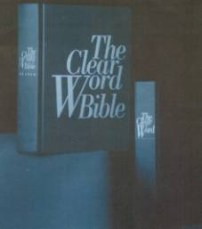

Is Seventh-day Adventism a cult?
A religious cult is an organization that has departed from mainstream Christianity to follow doctrines that are not Biblical. They hold their leader's Bible contradictions over the Word of God. The Seventh-day Adventist Church teaches many non-Biblical doctrines and a false gospel.
Webster’s Dictionary by Random House: cult n. 1. a particular system of religious worship, esp. with reference to its rites and ceremonies. 2. a. a group that devotes itself to or venerates a person, ideal, fad, etc. 3. a. a religion or sect considered to be false, unorthodox, or extremist. b. the members of such a religion or sect. -adj. 4. of or pertaining to a cult. 5. of, for, or attracting a small group of devotees: a cult movie. cultic, adj. cultish, adj. cultism, n. cultist, n.
Are there different kinds of cults?
Most definitely. There are religious cults, Satanic cults, secular cults. Some cults are purely secular such as sport idols, UFO cults, movie stars, and some that are dedicated for the good of society. A cult in itself is not necessarily evil.
Christians need to be alert as to what is being taught as truth and refuse to accept Biblical contradictions—especially if a church has a prophet. People find comfort and security in belonging to religious cults, as it agrees with their beliefs that they were brain-washed into believing as truth.
1. A leader or group of leaders, prophet, prophetess, that claims to speak for God.
Fulfillment: Ellen G. White (EGW), the Seventh-day Adventist’s prophetess makes the following claims:
EGW in 1876: "In ancient times God spoke to men by the mouth of prophets and apostles. In these days He speaks to them by the testimonies of His Spirit. There was never a time when God instructed His people more earnestly than He instructs them now concerning His will and the course that He would have them pursue." —Testimonies, vol. 4, pp. 147-148. (1876)
EGW claims: "that there never was a time when God instructed his people more earnestly" back in 1876 through her testimonies. Was her "testimonies" more earnest than the prophets such as Noah, Jonah, Abraham, Moses, as well as the apostles and even Jesus Christ? Heresy!!! In EGW's mind "his people" back in 1876 are SDA church members and God is giving them inside information through her visions. This is a typical example of religious cultism when people accept false prophets and prophetess writings as from God.
Bible:Heb 1:1 - 2 (NIV) In the past God spoke to our forefathers through the prophets at many times and in various ways, 2but in these last days he has spoken to us by his Son, whom he appointed heir of all things, and through whom he made the universe.
We could stop here with the first quote of EGW as she claims to replace Jesus Christ and is now speaking for God. This in itself shows that Adventism is a cult when comparing it with Hebrews 1:1-2.
God never told his church that Jesus would be replaced by Ellen Gould White or any other prophet or prophetess.
EGW:"In these letters which I write, in the testimonies I bear, I am presenting to you that which the Lord has presented to me. I do not write one article in the paper expressing merely my own ideas. They are what God has opened before me in vision--the precious rays of light shining from the throne." —Testimonies, vol. 5, p. 67.
It has been proven that much of what EGW wrote did not come from "the throne of God" but copied from books in her 1200 book library. God's prophets are not liars! See " Desire of Ages : The Veltman report."
2. What they write and teach their followers contradicts the Bible.
Fulfillment: "Ellen G. White Contradicts the Bible Over 50 time" EGW holds strict authority over its members in respect to, finances, wills, diet, dress, amusement, associations, etc. as taught in her books such as Testimonies to the Church. (SeeDesire of Agesnot inspired)
3. Many members taking issue with the authority of the leader are excommunicated, (disfellowshipped), shunned, or not allowed to hold office in the church, etc.
Fulfillment:EGW—"When the judgment of the General Conference, which is the highest authority that God has on earth, is exercised private independence and private judgment MUST NOT be maintained, but must be surrendered." Testimonies, vol. 3, p. 492.
Look at the Adventist pastors that were fired for not believing in some of Ellen G. White’s teachings. Also members who have been put out of office and disfellowshipped for not accepting Ellen G. White as a prophet or her teachings.
Is not the highest authority on earth the Holy Spirit?
4. Cult leaders teach infallibility in their teachings or the writings of their cult leader, in this case Ellen G. White.
Fulfillment:"It is from the standpoint of the light that has come through the Spirit of Prophecy (Mrs. White’s writings) that the question will be considered, believing as we do that the Spirit of Prophecy is the only infallible interpreter of Bible principles, since it is the Christ, through this agency, giving real meaning of his own words." (G.A. Irwin, General Conference President, from the tract The Mark of the Beast, p. 1.)
On February 7, 1887, the General Conference passed the following resolution: "That we re-affirm our binding confidence in the Testimonies of Sister White to the Church, as the teaching of the Spirit of God." (SDA Year Book for 1914, p. 253)
"Our position on the Testimonies is like the key-stone to the arch. Take that out and there is no logical stopping-place till all the special truths of the Message are gone...Nothing is surer than this, that the Message and visions (of Mrs. White) belong together, and stand or fall together." (Review and Herald Supplement, August 14, 1883.)
5. The cult members believes that they are superior to others because of their unique teachings as they have knowledge of God’s will that other Christians do not have. Because of the false teachings of their prophet or leaders, they consider themselves especially chosen by God, and look at themselves as the "Remnant Church," or "The True Church".
Fulfilled:Ellen G. White and the Seventh-day Adventist Church view themselves as "the Remnant Church" alone especially called by God in 1844, over all other churches, which they called Babylon. The Adventist still considers themselves the Remnant Church. Read, "Seventh-day Adventist Believe 27," Chapter 12, "The Remnant and Its Mission", p.153.
"One of the gifts of the Holy Spirit is prophecy, This gift is an identifying mark of the remnant church and was manifested in the ministry of Ellen G. White." "Seventh-day Adventist Believe 27," p.216.
Without Ellen G. White and her Bible Contradictions, the Seventh-day Adventist Church could not call itself the remnant church. In fact the Word of God never calls any denomination a remnant church or true church.
6. Adventist leaders and their members use the writings of Ellen G. White to interpret the Scriptures. EGW's writings are the final arbitrator of doctrines.
Fulfilled:The Adventist’s claim to hold the Bible above all teachings, but in fact they interpret the Bible by the writings of Ellen G. White. This is demonstrated in their Sabbath school Quarterlies, sermons, and articles in their church paper, Adventist Review. Her counsel is to be followed as Scripture.
7. They publish their own Bible and insert their own doctrines into the text.
Fulfilled: The Seventh-day Adventist Church publishes The Clear Word Bible—now called The Clear Word. It is a cultic Bible that does not separate the Bible text from the author’s personal commentary, opinions, which slants the text to agree with the writings of Ellen G. White and other Adventist understandings to make the text say what he wants it to say. This corrupt piece of work, makes the Word of God unclear to the reader.
Adventist scholar Dr. Sakae Kubo say’s, "I am concerned about how our membership regard and use Blanco’s The Clear Word. Behind my remarks is a history of Bibles of this sort that have a terrible bias. The Jehovah’s Witnesses’ New World Translation is an obvious example—the divinity of Christ is removed and His createdness is brought out along with other tendential characteristics. The very obvious and serious danger is that our own people will be confused as to what the Bible really says. Interpretation has been so mixed in with the text that our people will think that the interpretation is part of the Word of God." (Adventist Review, April 1995, p.15.)

The Clear Word Bible, 1994, by Jack J. Blanco
Printed and distributed by Review and Herald Publishing Association, 55 West Oak Ridge Drive, Hagerstown, MD 21740
To see examples of how, The Clear Word Bible perverts the Word of God, go to The Clear Word Exposed.
8. Religious cults look at individuals that leave their group as being lost, and without salvation.
Fulfilled:It is difficult for Seventh-day Adventists to fathom that a person leaving their church that disagree with Adventist doctrines can remain a Christian and still be saved. They often conclude someone must have hurt their feelings in an effort to justify their departure.
After I left the Adventist Church I had letters telling me I was being led by Satan, I was making war on God's church, I would burn in Hell, and that I should come back to the church, etc.
Christians that do not belong to the Seventh-day Adventist Church are often called "outsiders." When a Christian from another Church joins the Seventh-day Adventist Church, they are said, "to have come into the truth." They are often "encouraged" to be rebaptized.
See more: EGW is as inspired as the Bible prophets
Sections
- A leader or group of leaders, prophet, prophetess, that claims to speak for God.
- What they write and teach their followers contradicts the Bible.
- Many members taking issue with the authority of the leader areexcommunicated, (disfellowshipped), shunned, or not allowed to hold office in the church, etc.
- Cult leaders teach infallibility in their teachings or the writings of their cult leader, in this case Ellen G. White.
- The cult members believes that they are superior to others because of their unique teachings as they have knowledge of God’s will that other Christians do not have. Because of the false teachings of their prophet or leaders, they consider themselves especially chosen by God, and look at themselves as the "Remnant Church," or "The True Church".
- Adventist leaders and their members use the writings of Ellen G. White to interpret the Scriptures. EGW's writings are the final arbitrator of doctrines.
- They publish their own Bible and insert their own doctrines into the text.
- Religious cults look at individuals that leave their group as being lost, and without salvation.
Robert K. Sanders, Founder and Editor of Truth or Fables, 1997–2012
Life Assurance Ministries assumed ownership of Truth or Fables in 2012
© 2016 Life Assurance Ministries. All rights reserved.